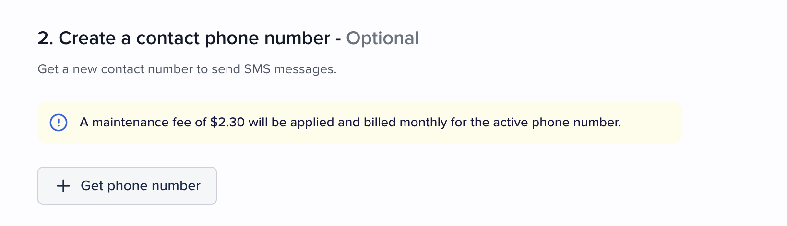
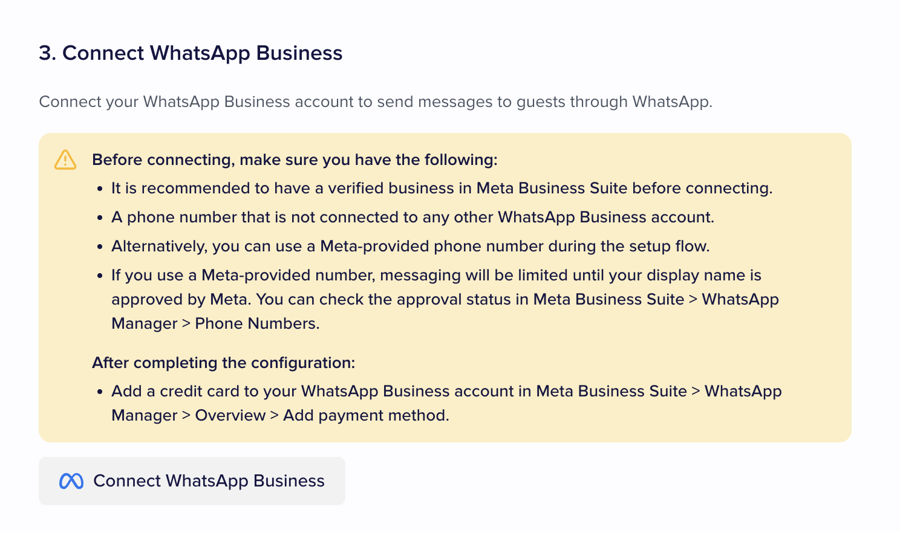
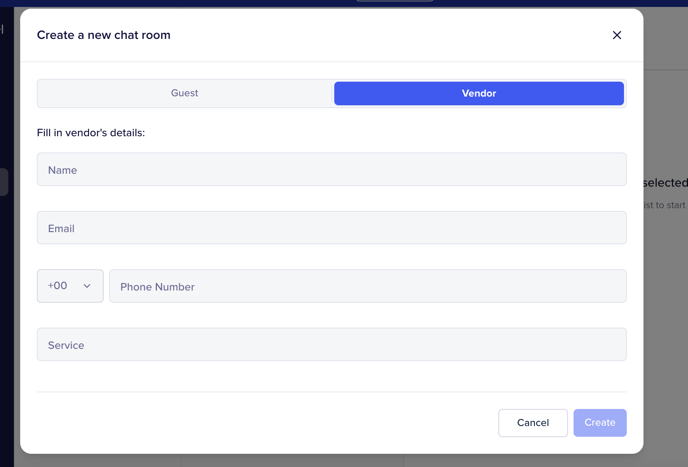
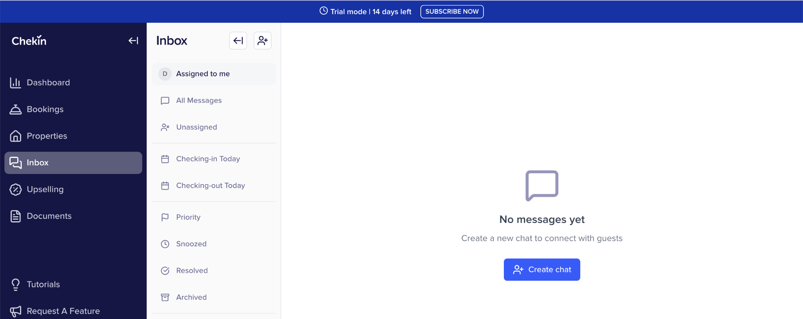
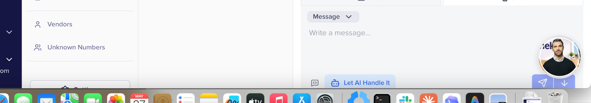
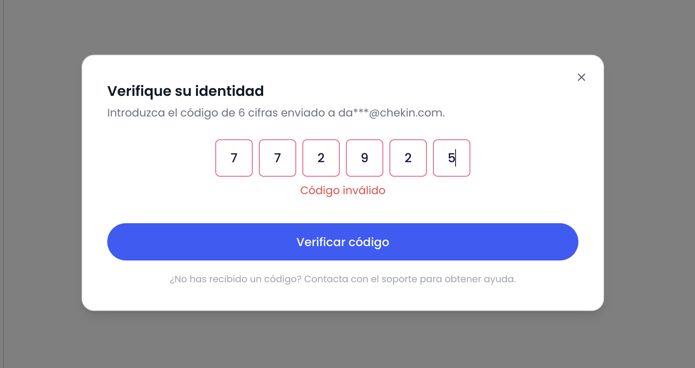
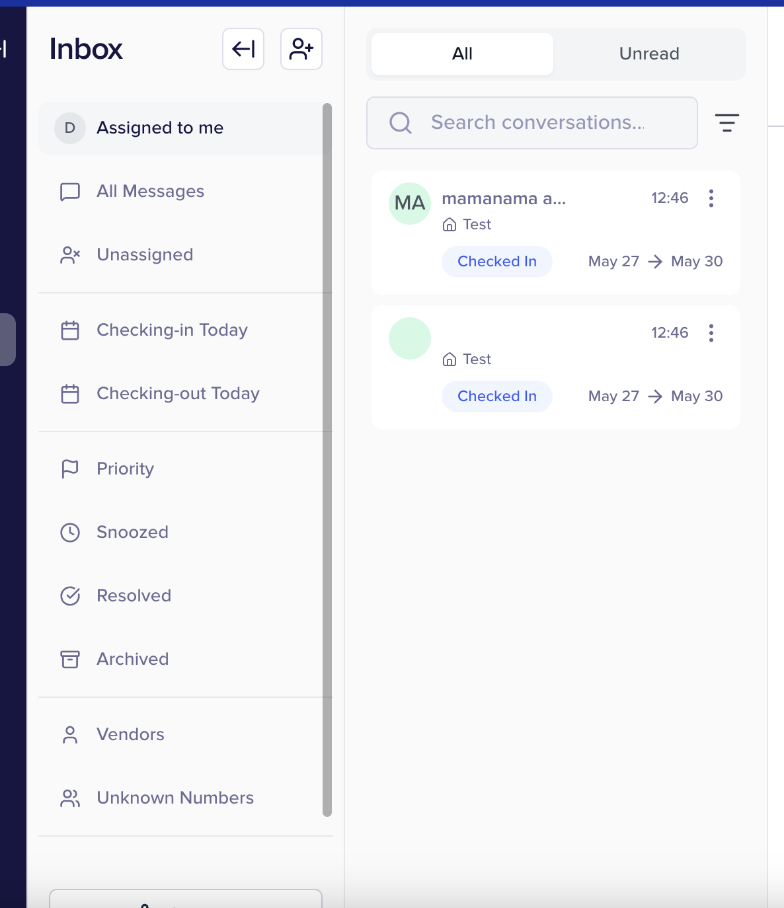

1. INBOX initial setup
6 issues HighOn the initial settings page the action buttons (CTAs) end up partially or fully hidden. The header also overlaps with the trial banner, making navigation harder.

When enabling the chat option in the guestapp, the system constantly shows a message saying the main guest must register to use the chat. This happens in two scenarios:
- Before registering the leader: it shouldn't be blocked, since the guest may have questions about the registration form itself.
- After registering the leader: the message persists even though the guest is already registered correctly.


If a user already has custom emails configured, INBOX does not list them as available options for sending.

The label "custom email" appears with no clear meaning in the context where it is shown.
Additionally, the property name field is misleading: since it is an alias applied to all properties, showing it tied to one specific property doesn't make sense.
The communications configuration in INBOX is not connected with the per-property communications configuration. SMS or WhatsApp can be enabled in INBOX even when they are not enabled at the property level.
Proposal: remove the per-property communications settings if they no longer serve a purpose, to avoid duplication and confusion.

The corresponding section is shown in the guestapp even when it has not been enabled in INBOX settings.

2. Billing, costs and feature usage (PAYG)
6 issues CriticalThe interface does not display the SMS cost (neither per unit nor cumulative) before or after sending.


There is no defined flow for the maintenance fee to be counted within feature usage for billing purposes.
The cost of WhatsApp conversation windows and per-message charges is not shown.
In addition, the interface states that WhatsApp costs are paid by the host directly to Meta, but the full flow is not clear to the user (what is paid, to whom, and when).
When enabling a PAYG feature (WhatsApp or SMS), the system does not require a prior top up. The feature can be activated and used with no balance, which may leave messages unsent or unbilled.
INBOX feature usage is not being recorded in feature usage, so customers cannot be charged based on their consumption.
Phone calls can be made from the dashboard. This action has a high cost but:
- The cost is not shown to the user before the call.
- It is not added to feature usage for billing.

3. Chat room creation and reservation search
6 issues HighThe term "guest" used in chat creation is ambiguous. It is more accurate to call it "reservation", since the unit being acted upon is the reservation.

The fields shown on the cards/boxes are not the best ones to visually locate a specific reservation. Key data points to differentiate them are missing.
Currently the search only works by leader name. It should allow searching at least by:
- Reservation ID
- External ID
- Reservation date
- Property name
The paginator reports 10,000,000 pages, when in reality only a single page should be shown given that there are no more reservations available.
The current design does not cover realistic scenarios where an account has dozens or hundreds of reservations (e.g. 100+). The experience becomes unworkable when loading all reservations in this view.
The bottom action buttons are visually cut off, preventing them from being used properly.
4. Vendor chats
3 issues MediumWhen creating a chat with a vendor, the information of vendors already created in the system is not leveraged. The user has to enter the data again.

When creating a chat with a vendor, the system does not automatically redirect to the newly created chat.
The newly created chat takes a noticeable amount of time to appear in the vendors drawer of the side menu, creating uncertainty about whether the creation actually completed.
5. Message management and traceability
8 issues CriticalMessages created from your own account are not attributed to you as the author, and are also not visible from your profile.

It looks like messages can only have one status at a time (priority, all messages, etc.) rather than supporting multiple ones.
As a result, marking a message as "priority" removes it from "all messages", which is not the expected behavior.
If a guest replies to an email sent from INBOX, the reply does not appear within INBOX, breaking the conversation thread.
Replies sent by a guest via SMS do not appear in INBOX, causing the same traceability problem as with email.
From INBOX settings, the user can change the email, phone number or WhatsApp at any time. The system does not warn about the problems this can cause (for example, conversation history loss) and there is no logic in place to control these consequences.
When composing a message, the send buttons and the settings button appear partially hidden, making them harder to use.

The system lets you send emails and SMS even when the reservation has no email or phone number attached. It should block the send or warn the user.
There is no option to send a message through a single specific channel:
- Guestapp only.
- PMS only.
- OTA only (Booking, Airbnb, etc.).
In addition, the access code may end up being sent to a PMS email that the user has no access to, or directly to a reservation with no email attached, with no warning or blocking from the system.

6. Scheduled messages
4 issues MediumScheduled messages currently live in a separate section. They should appear inside the general messages section, alongside the rest of the history.

The form displays a field with your own name, which is redundant. A scheduled message is always created by the current user.
After a reload, the scheduled messages that were created are no longer displayed, which suggests they are not being persisted correctly or the view is not loading them.
There is no way to cancel or delete a scheduled message before it is sent.

7. Reservation and contact integration
5 issues HighFrom the reservation info screen there is no link or direct access to INBOX. No related communications information is shown either.

The reservations list/landing does not include any status indicating the communications state for each reservation.
The communications data displayed at the reservation level does not reflect what is actually happening in INBOX, leading to inconsistency between views.
From the contact details section, contact information cannot be added or modified.
In addition, the section title says "guest details" when it should be "reservation details", since the information refers to the reservation, not to the guest.

Reservations created from the PMS arrive with a fake email and no SMS. When the guest later adds their real email or phone at the guest level, INBOX continues using the data synced at the reservation level instead of the new ones.

8. Guest App, AI and identity verification
6 issues CriticalTo be able to use the chat, the guest is forced to verify their identity. This adds unnecessary friction to a basic conversational support feature.

Even after completing identity verification, the system responds with an error, preventing the user from continuing.

When trying to compose a message from the guestapp, the system throws an error and does not allow the user to continue.

When using the AI feature, it returns a "no response" without generating any useful content.

The landing states that the system automatically detects the reservation language and replies in it. However, when testing with a Spanish reservation, default replies are sent in English (or in whichever language is configured in the dashboard).
The auto-reply settings themselves state literally: "When enabled, your inbox will automatically send intelligent responses to guest messages based on the property knowledge base. If the property has no knowledge base, the auto-reply won't work for that property."
However, there is no section anywhere — not inside the property, not in INBOX, not in any other part of the dashboard — where this documentation that the system claims to use to generate intelligent replies can be uploaded or managed. The feature is effectively unusable because no property can ever actually have a "knowledge base".
9. Templates per property group
1 issue HighINBOX should allow defining templates per property group, in line with what already exists in virtually every other feature of the product.
A single account can have several synced properties with different visual and operational identities, so forcing a single global corporate look and feel for all communications is unrealistic.
10. Other UX observations
4 issues MediumThe time window selector inside the auto reply does not respond when clicking the field. It only opens when clicking specifically on the clock icon.
The booking notifications and task sections do not let the user add notifications or tasks, and are not operational. They also don't indicate which notifications will appear or where they come from, leaving these sections without context.

Notes are managed from inside the email and SMS sections, which doesn't seem like the most logical location for a feature that should cut across the conversation.

The available statuses to filter by moment of the reservation are not the most appropriate. They should reflect the real lifecycle:
- Pre check-in
- Check-in day
- During the stay
- Post stay

The WhatsApp flow is pending testing, as it required setting up a Meta account first.
The inbound/outbound message flow through the PMS or the OTA (Booking, Airbnb, etc.) has not been tested. The observations in this report are limited to the channels that were actually tested.
11. Tasks section
5 issues HighThe Tasks entry is not visible or stays hidden within the side navigation menu, making it difficult to find and access the feature.

When creating a task, the only available selector is "Chat room (optional)", which prevents linking the task directly to a reservation with its real operational context.
In addition, the unit the rest of the product is built around is the reservation, not the "chat room". The field should be renamed to "reservation" to keep terminology consistent.

When a task is assigned to a reservation, that task is not shown in the corresponding message box for that reservation inside the Tasks section, breaking traceability between task and reservation.
The task list is sorted only by creation date. There is no option to sort by other criteria such as priority, due date, assignee, status, etc., which limits its usefulness when there is a high volume of tasks.
When a task's progress reaches 100% (all its subitems checked), the task does not automatically move to the "Completed" status. The user has to update the status manually, which breaks the expected logic and leaves finished tasks not reflected as such.